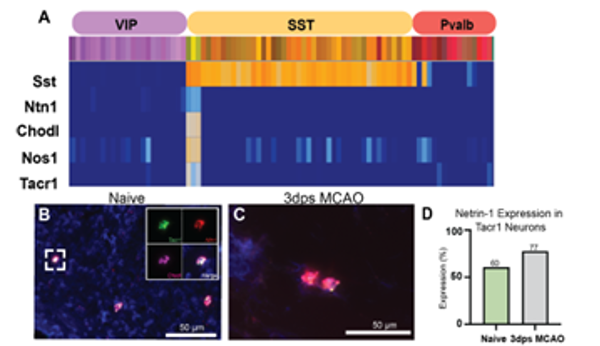
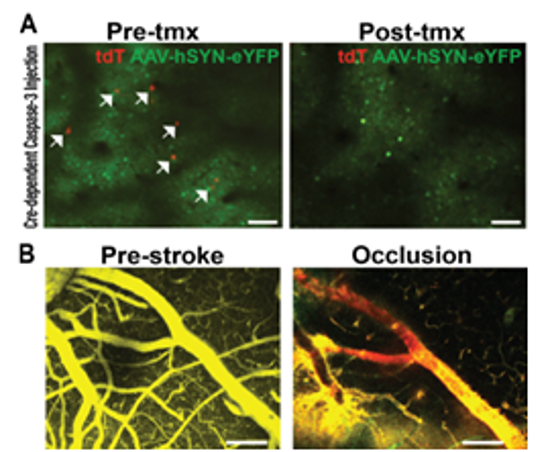
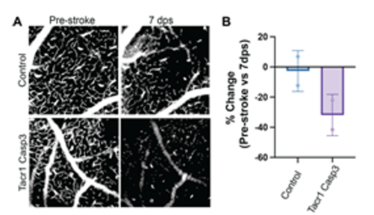

The Role of Tacr1 Neurons in Stroke Recovery
How a rare inhibitory neuron population orchestrates vascular repair and waste clearance after ischemic injury
Central Hypothesis
Tacr1 neurons are a functionally specialized subset of cortical inhibitory neurons that act as master orchestrators of cerebrovascular health. After ischemic stroke, their activity drives both neovascularization (angiogenesis) in the penumbra (Aim 1) and arteriole-pulsation–driven glymphatic waste clearance during sleep (Aim 2).
Background
Ischemic stroke is the leading cause of long-term disability worldwide, yet therapeutic options after the acute window remain severely limited. Recovery depends on two intertwined processes: neovascularization of the ischemic penumbra and clearance of neurotoxic metabolites that accumulate after injury. Both processes are tightly coupled to neural activity and cerebrovascular tone.
The central question: Is there a single neuronal population that can coordinately regulate both vascular repair and metabolic clearance after stroke — and can it be targeted to improve recovery?
Tacr1 (tachykinin receptor 1) neurons are a remarkably rare cortical interneuron population — comprising only ~1% of all cortical neurons — defined by co-expression of Sst (somatostatin), Chodl, and Nos1 (neuronal nitric oxide synthase). Their NOS1-derived nitric oxide (NO) output makes them uniquely capable of driving vasodilation and modulating cerebrovascular tone directly.
A key preliminary observation: single-molecule FISH reveals that Netrin-1 (Ntn1), a potent pro-angiogenic guidance cue, is expressed 50× higher in Tacr1 neurons compared to all other cortical cell types. Tacr1 neuron activity also correlates tightly with arteriole pulsations during NREM sleep — the oscillatory driver of glymphatic flow.
Significance
Ischemic stroke affects ~800,000 Americans annually. Despite decades of research, no neuroprotective therapy has translated from bench to bedside. This project proposes a fundamentally new framework: targeting a single inhibitory neuron subtype (Tacr1) to simultaneously promote vascular recovery and cognitive rehabilitation after stroke.
If Tacr1 neurons are confirmed as master regulators of both angiogenesis and glymphatic clearance, they become a tractable therapeutic target for activating endogenous neurovascular repair mechanisms. The approach is complementary to — not competitive with — thrombolysis and thrombectomy, and addresses the chronic phase where no current treatments exist.
More broadly, this work advances understanding of neurovascular coupling beyond the classical NVC paradigm: rather than moment-to-moment coupling, Tacr1 neurons may shape vascular structure and clearance over the timescale of recovery (days to weeks), a temporally extended form of brain–vessel communication that has not been systematically explored.
Specific Aims
Tacr1 Neurons Drive Angiogenesis via Netrin-1
Tests whether Tacr1 neurons promote neovascularization (angiogenesis) in the peri-infarct penumbra through their exceptional Ntn1 expression. Tacr1 ablation (AAV2-EF1a-flex-taCasp3-TEVp in Tacr1CreER mice) reduces post-stroke vessel density in the penumbra measured by LSCI and 2-photon imaging — and Netrin-1 replacement rescues this deficit.
Tacr1 Neurons Sustain Glymphatic Clearance via Arteriole Pulsations
Tests whether Tacr1 neural activity during NREM sleep drives arteriole pulsations that power glymphatic CSF flow. hM4Di DREADDs silence Tacr1 neurons selectively; FITC-dextran CSF tracer + Evans Blue edema quantification through a PDMS cranial window measures glymphatic clearance.
Preliminary Data



AHA Predoctoral Fellowship
American Heart Association · Awarded 2026–2028